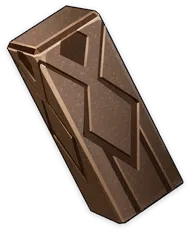
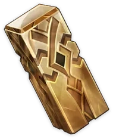
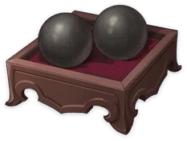
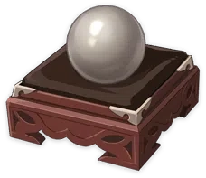
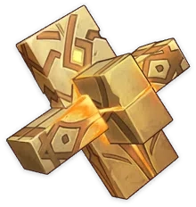
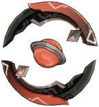
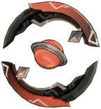

Luminous Sands from Guyun


Weapon Ascension Material.
The stone pillars that tower amid Guyun Stone Forest were
once the stone spears Morax used to defeat his enemies.
Over time, the gods' substance has seeped into the pillars
that pin them down, lending them divine power. The pillars
sometimes shed fragments of hatred and curses.
Lustrous Stone from Guyun
Weapon Ascension Material.
The learned know that Guyun Stone Forest is far more than
simply a miraculous sight on the sea to behold: It is the
cemetery of the former gods of Liyue. Hatred and filth have
periodically risen up from it, but all have been subdued by
a demon-conquering young man.
Relic from Guyun
Weapon Ascension Material.
The stone spear has a glimmering core formed by the power
of the defeated gods. Their hatred is not directed at
Morax, however, for they have lost themselves a long time
ago and are incapable of holding personal grudges.
Divine Body from Guyun


Weapon Ascension Material.
That which lurks within and animates this relic are the
divine remains of lamenting gods. They are unrealized
ideals, designs for a prosperous humanity that could never
be. They may now lie deep within stone and sea, but they
will not go quietly into the night.
Mist Veiled Lead Elixir
Weapon Ascension Material.
Jueyun Karst is the realm of the mighty and illuminated
adepti. But other than the ability to control the elements
of the world, Jueyun Karst is also home to three other
untold secrets: Alchemy, Sigils, and Sub-Space Creation.
Mist Veiled Mercury Elixir


Weapon Ascension Material.
With Fulu (Sigils), the adepti can store their power in the
form of symbols, and with Waijing (Sub-Space Creation) they
can fashion a cosmic paradise with the power of their
minds. The manufacture of elixirs, however, has always been
shrouded in mystery, for certain death follows for any who
swallow them.
Mist Veiled Gold Elixir


Weapon Ascension Material.
Elixirs are in fact pills made from metal alloys. They were
created by the adepti, and are able to grant weapons
transcendent powers. However, they are rarely seen in the
world due to the hubris of the practitioners of martial
arts, who prized the ways of combat over the paths of the
adepti.
Mist Veiled Primo Elixir
Weapon Ascension Material.
An elixir of the highest quality. It embodies a state of
intertwining order and chaos, and is said to mirror how the
world was when it was first created. Of course, a certain
someone knows that this was not the case.
Grain of Aerosiderite
Weapon Ascension Material.
A black meteor once fell beyond Liyue's Sea of Clouds, said
to have fallen to vanquish a monster. However, it was
stained by powerful tainted blood, so this item no longer
possesses the pure power of Rex Lapis.
Piece of Aerosiderite
Weapon Ascension Material.
Rumors of sea monsters are commonplace in Liyue, since the
other shore is an unknown region that lies outside of
Teyvat. Without the protection of The Seven, all that lies
beyond is unknown chaos. Only power beyond the order of
Teyvat is able to stain the power of Rex Lapis black.
Bit of Aerosiderite
Weapon Ascension Material.
The coastal nations of Teyvat refer to the region beyond
the protection of The Seven as the Dark Sea. It is said
that many defeated gods refused to live under the new order
of The Seven, so they fled to remote islands and became
evil gods. However, their powers came from the same source
as Rex Lapis, separate from this all-devouring darkness.
Chunk of Aerosiderite

Weapon Ascension Material.
When Khaenri'ah was destroyed, a great sinner created
endless monsters with dark, alien blood flowing through
their veins. They rampaged across the land, destroying all
in their paths. They were mutated lifeforms, and the
mutations were caused by powers from beyond this world. The
black serpentine dragon Durin that attacked Mondstadt was
one such mutated being.
 
